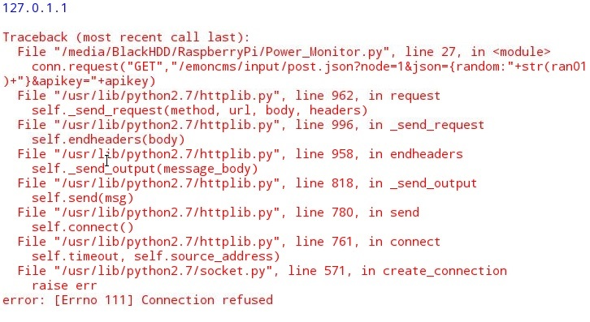
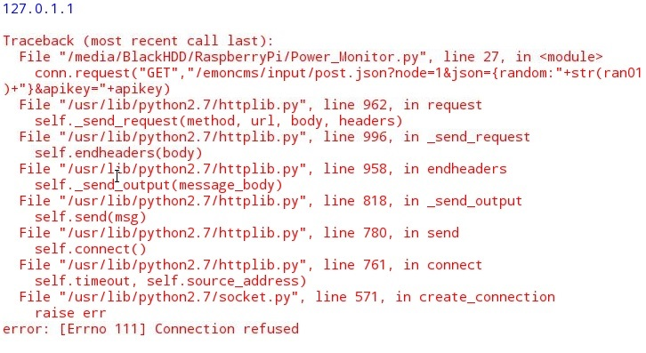

Hi guys,
My first attempt to write random data from RaspberryPi to EmonCMS.
Code runs in RaspberryPi using Python 2.
I would appreciate some assistance, many thanks.
Happy New Year !!

The ouput:

[Image width set. Moderator (RW)]
Archived Forum |
|
My First Attempt - Please Help [Python HTTP]Submitted by FlipSnyman on Thu, 31/12/2015 - 16:53Hi guys,
My first attempt to write random data from RaspberryPi to EmonCMS. Code runs in RaspberryPi using Python 2. I would appreciate some assistance, many thanks.
Happy New Year !!
The ouput: 
[Image width set. Moderator (RW)] » |
Re: My First Attempt - Please Help [Python HTTP]
Not sure whats going wrong there but we use urllib2 in emonhub, this cut down example of how to use it might help:
import urllib2
request = urllib2.Request("http://emoncms.org/input/post.json?json={power:200}&apikey=WRITE-APIKEY")
response = urllib2.urlopen(request, timeout=60)
reply = response.read()
print reply
Re: My First Attempt - Please Help [Python HTTP]
I wouldnt put that directly in a while loop as it will just send out requests continuously!
Perhaps something like:
import time
while True:
# send data here
time.sleep(10.0)
Re: My First Attempt - Please Help [Python HTTP]
Made some progress.
Software is working fine when I write to emoncms.org.
The error occurs when I try to write to local wampserver on my laptop.
Any suggestions where to look as it points to a wampserver issue?
Thanks Trystan, I have added sleep command.
Thanks
Re: My First Attempt - Please Help [Python HTTP]
Two (hopefully obvious) points to check: Is your Wampserver on-line, and are you using the dotted IP address (not "localhost") that your router, or the name that your DNS, has given it?
Re: My First Attempt - Please Help [Python HTTP]
Hi Robert,
Thank you for the assistance.
I was sure your suggestion will work, but it did not.
Wampserver is on-line.
I log into EMONCMS with http://mylaptop IP/emoncms
I get the login screen and login is sucessfull, so all looks good on wampserver.
The error 111 says connection refused.
Any other suggestions?
Thanks.
Re: My First Attempt - Please Help [Python HTTP]
i'm also using wamp although i changed the port it was working on. i also have node red with the emoncms nodes and i sometimes see the same error in the node red logs when connecting to emoncms on the wamp server. It might have something to do with too many connections in a short amount of time that had been made to the wamp server.
i also once had the problem that it could not post any data to emoncms on my wampserver but then i could not get the login screen to work either. I'm sure you already tried it but what i did then was just choose restart all services on the wamp control and posting to emoncms worked again as was going to the site.
also have you tried writing the (internal) ip adres of your laptop directly in httpconnection instead of looking it up first? like writing httplib.httpconnection("192.168.0.101", 80) for example (change ip to ip of laptop) ? just to be sure you are getting the correct ip adress.
also just noticed 127.0.1.1 being outputted isn't that kind of a weird ip adres ? i'm not certain but if you want to post to localhost shouldn't it be 127.0.0.1. Try my suggestion above also by writing the ip adress your router's dhcp gave to your laptop
Re: My First Attempt - Please Help [Python HTTP]
So taking Trystan's example, does your Python line look like:
request = urllib2.Request("http://mylaptop IP/emoncms/input/post.json?json={power:200}&apikey=WRITE-APIKEY")
"emoncms" of course being the directory as WAMP presents it to the outside world. I put it that way because when you're using WAMP, you need to have two views of your laptop. One is the laptop's own that you're accustomed to, the other is the one relative to the directory that WAMP calls its "www" directory, which WAMP presents as the root directory where web pages are concerned. (What I'm trying to say is, is emoncms in [www]\emoncms ? It looks like that from what you've written.)
I know I've had a NanodeRF working to WampServer running under Windows XP, but I can't find the appropriate sketch (though it might not have been useful anyway).
It will probably help to give everything static IP addresses - a setting in your router - especially while you're getting it to work.
Checking Google, there's a thread on the WampServer forum about Port Forwarding that might be relevant. I didn't need to do that though.